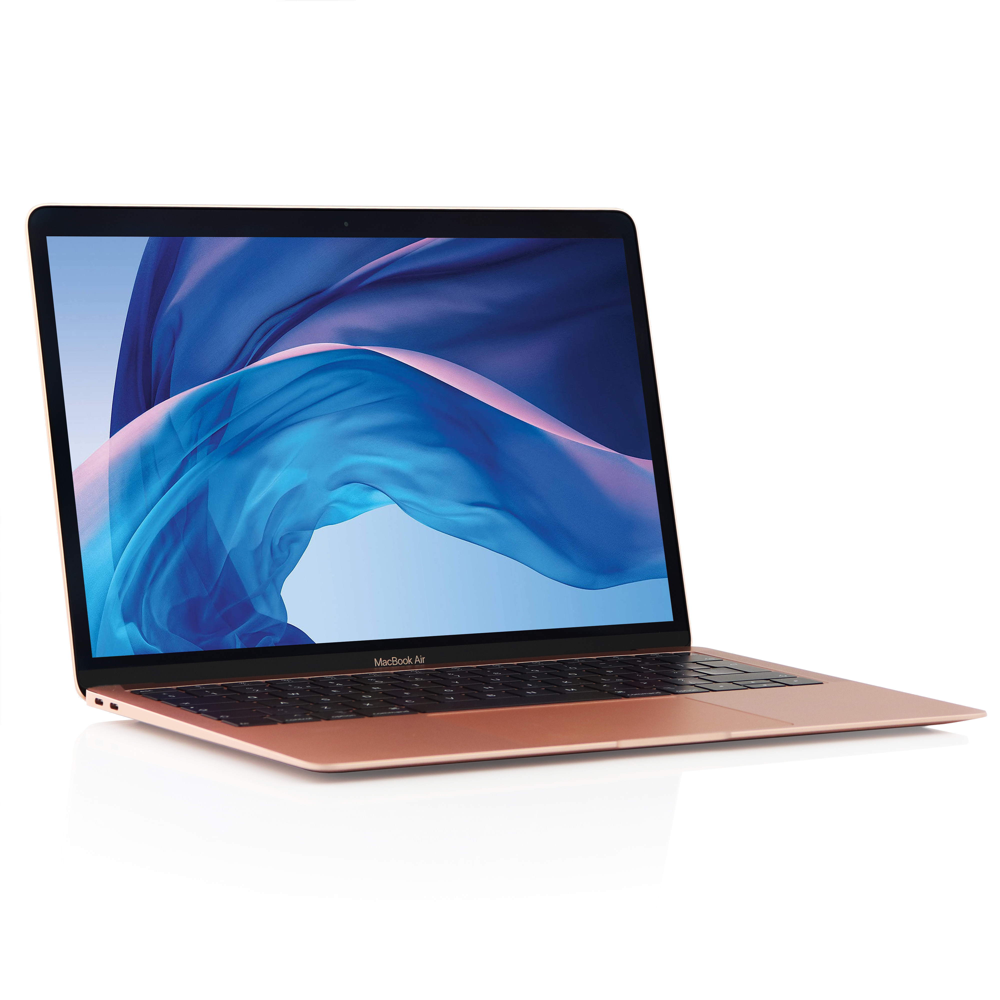

MacBook Pro
Сила в усій красі

Три величезних стрибка уперед.
MacBook Pro виривається вперед із чипами M3, M3 Pro й M3 Max. Ці найсучасніші чипи з усіх, створених Apple, було розроблено за 3‑нанометровою технологією й оснащено новою архітектурою графічного процесора. Кожен із них пропонує ще більше продуктивності й можливостей.
M3 забезпечує серйозні швидкість і продуктивність для виконання повсякденних завдань, багатозадачності в додатках і відеовикликах, а також роботи з контентом нового рівня в професійних додатках та іграх.
Графічна продуктивність, що змінює правила гри.
Представляємо цілковито новий клас архітектури графічного процесора. І наразі найбільший прорив у графіці для чипа Apple. Динамічне кешування оптимізує швидку інтегровану пам’ять, що значно збільшує середнє завантаження графічного процесора. А це зі свого боку забезпечуює величезний приріст продуктивності для найбільш ресурсоємних додатків та ігор. Затінення сітки з апаратним прискоренням розширює можливості та підвищує ефективність рендерингу геометрії. Таким чином, в іграх відображатимуться візуально складніші сцени, а деталізація стане ще кращою.
XDR очам на радість.
Завдяки Extreme Dynamic Range (XDR) чудово видно світлі ділянки, чітко передаються всі деталі в темних зонах, а кольори яскраві та природні. Відкалібрований на заводі, кожен дисплей Liquid Retina XDR підтримує ProMotion та еталонні режими.
- 10 000 діодів mini-LED39 згруповано для точної яскравості й контрасту
- Спеціальні оптичні плівки та розсіювачі ефективно змішують і формують світло.
- LCD-панель забезпечує частоту оновлення до 120 Гц.

Чітко. Ясно. По команді.
Камера 1080p. З технологіями, що забезпечують чітку картинку в умовах різного освітлення, відеовиклики стають ще реалістичнішими.
Система з трьох мікрофонів студійної якості. Вловлює найтонші звуки під час створення аудіо та зменшує фоновий шум, щоб ваш голос було чітко й добре чутно.
Система із шести динаміків. Дві пари низькочастотних динаміків із примусовою компенсацією та два високочастотні динаміки наповнюють простір звуком. А технологія просторового аудіо з Dolby Atmos створює тривимірну звукову сцену.
Все повʼязано.
MacBook Pro оснащено набором портів для підключення високошвидкісних периферійних пристроїв, керування дисплеями з високою роздільною здатністю або прямого вивантаження SDXC‑карт. Він підтримує як Wi‑Fi 6E, так і Bluetooth 5.3.
Родинні звʼязки.
-
Mac та iPhone
Ви можете відповідати на дзвінки й повідомлення з iPhone безпосередньо на Mac. Копіюйте зображення, відео чи текст на iPhone, а потім вставляйте їх в інший додаток на своєму Mac. Завдяки iCloud ви можете отримати доступ до улюблених файлів на обох пристроях. І це ще далеко не все.
-
Mac та iPad
Створіть ескіз на iPad і миттєво відобразіть його на Mac. Або використовуйте iPad як другий дисплей, щоб працювати на одному екрані, одночасно орієнтуючись на інший. Ви навіть можете запустити проєкт Final Cut Pro на iPad і продовжити його на своєму Mac
-
Mac та Apple Watch
Автоматично входьте на Mac, коли носите Apple Watch, з автоматичним розблокуванням. Пароль вводити не потрібно.